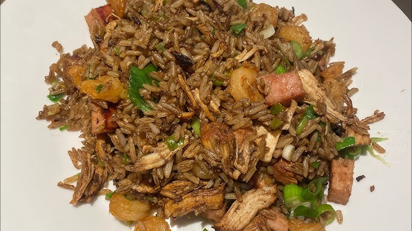
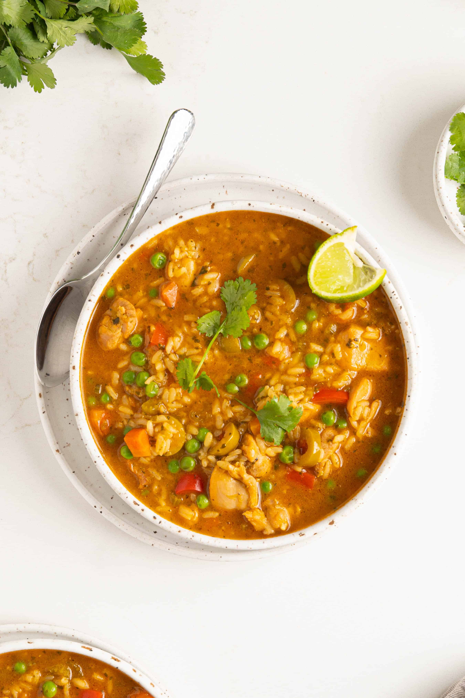

La Bandera
The Dominican staple, rice, stewed beans, meat usually chicken or beef, salad, and fried plantains.

Yaroa
A loaded casserole of mashed plantains or fries topped with savory beef or pork, cheese, mayo, and ketchup.

Pica Pollo
Dominican fried chicken, marinated with garlic, oregano, and lime, then crisped to perfection.

Moro de Guandules
Flavorful rice cooked with green pigeon peas, sofrito, and sometimes coconut milk.

Chofán
Dominican-style fried rice flavored with soy sauce, sautéed vegetables, and often chicken or shrimp.
Asopao
Hearty Dominican rice soup, typically made with chicken or shrimp, comfort food at its best.
